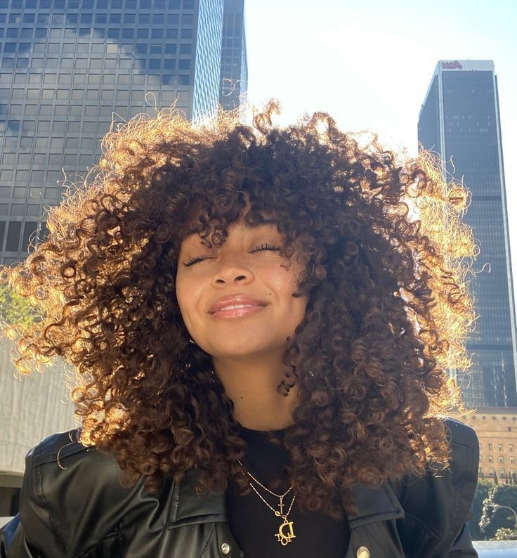

LIFESTYLE | FASHION | STREETWEAR
Streetwear is the trendiest topic and talk of the town. Contrary to traditional fashion, streetwear focuses on individuality and personality. As a result, it has revolutionized modern style.

Forget the rules—streetwear isn’t just for guys! Girls are redefining the scene with bold, oversized fits, sneaker culture, and statement accessories.
“Fashion is simply from the heart. Be stylish only from the inside.”
IT'S HISTORY
Streetwear didn’t begin in fashion houses or luxury runways. It was born on the sidewalks of Los Angeles in the 1980s — shaped by the voices of skateboarders, surfers, hip-hop heads, and rebels. One of the pioneers was Shawn Stüssy, a surfboard maker who began printing his signature logo on T-shirts. These shirts exploded in popularity, and without realizing it, he helped ignite a cultural revolution. Soon after, hip-hop culture in New York added its own flavor — think oversized jackets, bucket hats, and sneakers that told stories of struggle and resilience.
Throughout the 1990s and early 2000s, brands like Supreme, FUBU, A Bathing Ape (BAPE), and Rocawear took center stage, transforming streetwear into a global language of identity. And it wasn't just about fashion — it was about representing where you come from. It was about standing tall even if the world didn’t see your worth. As the 2010s rolled in, streetwear collided with luxury — think Louis Vuitton x Supreme or Off-White under Virgil Abloh’s vision. But even with fame and designer labels, streetwear never forgot its roots.
"I remember wearing my first pair of Jordans in high school," shares Ruby Kamanzi, a Kigali-based fashion blogger. "They weren’t just shoes. They made me feel powerful. Like I had a voice in a world that barely listened."
Today, the movement has grown beyond borders. In cities like Kigali, Nairobi, and Accra, streetwear is a mirror of youth energy — fearless, vibrant, and proud of culture. African designers are weaving tradition into modern aesthetics. Kente prints on bomber jackets, Ankara joggers, and beadwork sneakers? That’s not just fashion — that’s history being rewritten in style.
Beauty & Self-Care Tips
Beauty in the streetwear scene is raw and unfiltered. It’s not about hiding imperfections — it’s about celebrating what makes you *you*. Start with the basics: skin. A good skincare routine is non-negotiable. Cleanse, tone, moisturize, and never skip sunscreen. Melanin is magic, but it still needs protection!
Hydrate & Moisturize: Kigali-based model Tracy Uwimana swears by a simple combo: shea butter and rose water. “It’s natural, affordable, and keeps my skin soft all day,” she says. Don’t underestimate the power of drinking enough water too — glow starts from the inside.
Minimalist Makeup: The new rule? Less is more. Go for dewy skin, clear brows, and a little shimmer on the eyelids. Lip gloss is back — thick, juicy, unapologetic. Makeup artist Blessing Ntirenganya adds, “My favorite look? A fresh face with bold eyeliner. It’s soft but screams confidence.”
Nail Trends: Long or short, clean nails are a must. Pastel colors like lilac, mint, and peach are having a moment. But don’t shy away from metallic chrome or graphic prints. Nail artist Shanice from Nyamirambo tells us, “I had a client who got her nails done to match her favorite graffiti spot. That’s the thing about street beauty — it’s expressive, artistic, and deeply personal.”

Lastly, self-care is more than skin-deep. Take breaks from social media, rest well, and wear what makes you feel good. Because beauty is a vibe — and your vibe is unmatched.
Minimalist Makeup – Glossy lips, fluffy brows, and a touch of blush = effortless beauty.
Nail Trends – Go for pastel nails, chrome finishes, or graphic designs.
Meet Purple Speedy
On my behalf, I love street baggy clothes. They make me feel comfortable.